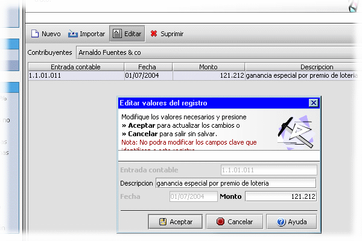

Transacciones
Una transacción o comprobante contable es una entrada que permite corroborar una gestión o trato. Aquí, las transacciones pueden ser vistas de forma similar. A continuación se presenta la interfaz para crear o mantener transacciones.

Cada transacciones esta asociada a un contribuyente. El único propósito de estos comprobantes es proporcionar a las secciones, datos de entrada que serán usados por la forma para el calculo de las declaraciones.
Al momento de asignar una forma a un contribuyente, cada sección dentro de la forma determina las transacciones que serán asociadas a ellas verificando si se cumple
- Es una transacción efectuada por el contribuyente al que se esta asociando la forma.
- Esta sección tiene asociada la cuenta contable descrita en el campo código.
- La fecha se encuentra entre la fecha inicio y final del periodo gravable o entre la fecha de inicio y un lapso de tiempo preestablecido dentro de la programación de la forma.
Si la transacción cumple con estos requisitos, es calculada o contada por la sección y el resultado es presentado por la misma.
Ver
Cuenta contable/Clio
Contribuyente
Editor de formas